behold the lamb
behold the lamb Bo Girds
Bo Girdsbehold the lamb beat Bo Girds by 5.34, and it was an upset: the lamb was 11th before the week. Recent add Germie Bernard scored 20.2 on a 8.13 projection, a lucky waiver pickup and the biggest decider on the field. Bo Girds's starters dropped 7 passes worth about 17.8, so the drops cost the game. Matthew Golden's drops alone were worth about 14.2. Bo Girds also started recent add Indianapolis Colts, a free agent pickup that scored -0.85. Bo Girds has now lost 2 straight, while behold the lamb sits at 6-6, right at the cut.

Germie Bernard is the Game Changer, a recent add who scored 20.2 for behold the lamb. He beat his projection by 12.07, which makes him a margin driver and the decider in a 5.34-point win over Bo Girds. It was an upset: behold the lamb sat 11th before the week and Bo Girds sat 2nd. Without Bernard, that is a loss, which is a lot to hang on a lucky waiver pickup from week 5. The team is named behold the lamb, and CeeDee Lamb finished 5.51 under projection; the beholding went to Bernard.


Game Changer goes to behold the lamb's Germie Bernard, a recent add who scored 20.2 in a 5.34-point win, which is lucky and also the entire point of waivers. Underperformer is Bijan Robinson at 6.3, a branding problem for a team called To Infinity and Bijan. Top Scorer Trevor Lawrence put up 28.34 for Amon-Ra Dawg Your Team, which lost anyway. MVB Jayden Daniels scored 21 on the London Cooking bench, and London Cooking still won by 66.4.
- 1Trevor Lawrence JAXAmon-Ra Dawg Your Team28.34
- 2
 Tyler Shough NOBo Girds26.96
Tyler Shough NOBo Girds26.96 - 3
 Drake Maye NEMaye d'force B with U23.8
Drake Maye NEMaye d'force B with U23.8
- 1
 Kenneth Walker KCBo Girds26.9
Kenneth Walker KCBo Girds26.9 - 2
 Christian McCaffrey SFLil Fridge26.2
Christian McCaffrey SFLil Fridge26.2 - 3
 James Cook BUFLondon Cooking22.8
James Cook BUFLondon Cooking22.8
- 1Tre Tucker LVAll You Need Is Love24.2
- 2
 Malik Nabers NYGReturn of T Mac22.5
Malik Nabers NYGReturn of T Mac22.5 - 3Germie Bernard PITbehold the lamb20.2
- 1
 Isaiah Likely NYGMaye d'force B with U20.9
Isaiah Likely NYGMaye d'force B with U20.9 - 2
 Colston Loveland CHIAll You Need Is Love15.5
Colston Loveland CHIAll You Need Is Love15.5 - 3
 George Kittle SFLondon Cooking15.4
George Kittle SFLondon Cooking15.4
- 1
 Pittsburgh Steelers PITReturn of T Mac15.35
Pittsburgh Steelers PITReturn of T Mac15.35 - 2
 Kansas City Chiefs KCPukancun on 314.15
Kansas City Chiefs KCPukancun on 314.15 - 3
 Denver Broncos DENLil Fridge13.35
Denver Broncos DENLil Fridge13.35
Trevor Lawrence led all started QBs at 28.34 for Amon-Ra Dawg Your Team, a team named after somebody else. Bo Girds put Kenneth Walker 1st among started RBs and Tyler Shough 2nd among started QBs, which is a lot of position leader for one roster. Maye d'force B with U got the advertised Drake Maye at 3rd among QBs, then got Isaiah Likely at 1st among TEs as a bonus nobody put in the name. All You Need Is Love had Tre Tucker 1st at WR and Colston Loveland 2nd at TE, so the name checks out.
 Pukancun on 3
Pukancun on 3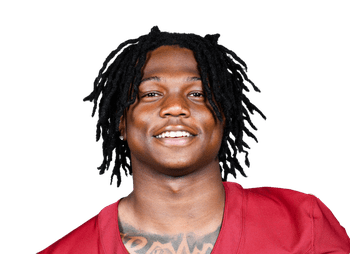
Jacory Croskey-Merritt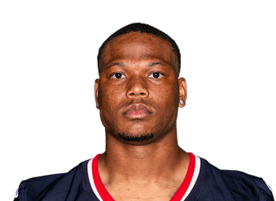
David Montgomery
 Amon-Ra Dawg Your Team
Amon-Ra Dawg Your Team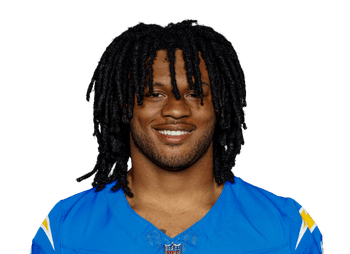
Omarion Hampton- Tony Pollard
 To Infinity and Bijan
To Infinity and Bijan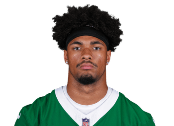
Kenyon Sadiq
Amon-Ra Dawg Your Team- Dalton Kincaid
Pukancun on 3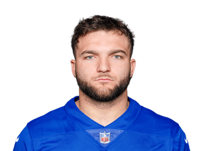
Cam Skattebo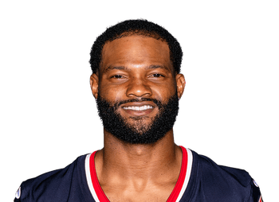
Nico Collins
To Infinity and Bijan- Ladd McConkey
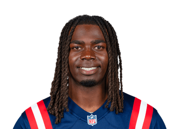
Rhamondre Stevenson
Bo Girds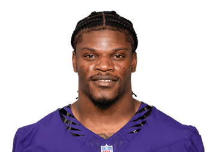
Lamar Jackson
To Infinity and Bijan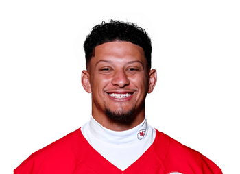
Patrick Mahomes- Brian Robinson
 Unsolicited Dak Picks
Unsolicited Dak Picks- Devaughn Vele
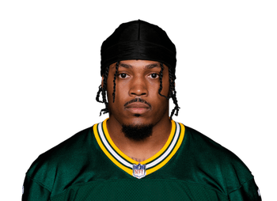
Josh Jacobs
Amon-Ra Dawg Your Team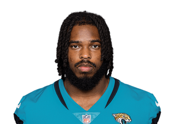
Bhayshul Tuten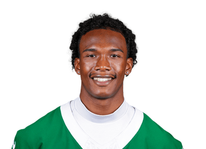
Garrett Wilson
 Lil Fridge 126.79
Lil Fridge 126.79
Lil Fridge beat Brock ‘N’ Roll by 38.48, with recent add Denver Broncos chipping in 13.35 off the free agent pile. Brock ‘N’ Roll went to the same pile and came back with recent adds Tampa Bay Buccaneers and Dallas Goedert, who scored 9.65 and 9.1, so the free agent pile plays favorites. Davante Adams and Mike Evans are now listed Out, and Romeo Doubs is now listed IR.
 Return of T Mac 120.29
Return of T Mac 120.29Return of T Mac beat Unsolicited Dak Picks by 38.82 in an upset, and the losers' 81.47 was a season low. Recent add Carnell Tate scored 16 for Return of T Mac, while Unsolicited Dak Picks got 5.5 from recent add Kimani Vidal. The Dak in Unsolicited Dak Picks scored 13.02, and A.J. Brown, now listed Questionable, added 3.2.
 Maye d'force B with U 113.55
Maye d'force B with U 113.55Maye d'force B with U won by 9.51 despite Jaylen Waddle, now listed Questionable, putting up 4.4, and without Isaiah Likely, that is a loss. The trade haul for Amon-Ra Dawg Your Team delivered recent add Garrett Wilson at 6.4 and recent add Dalton Kincaid, now listed Questionable, at 7.3. At 4-8 and 2 games below the cut, Amon-Ra Dawg Your Team is mostly dogging its own team.
behold the lamb 114.95This is the Matchup of the Week. Read the full story at the top. Go to the top story
 London Cooking 112.48
London Cooking 112.48London Cooking won by 66.4, and To Infinity and Bijan got 6.3 from Bijan. The trade desk at To Infinity and Bijan delivered recent adds Rhamondre Stevenson at 3.6 and Harold Fannin at 1.4. Recent add Ladd McConkey scored 2.2 and is now listed Out with a concussion, and recent add Terry McLaurin is now listed Out with a knee designation, so the trades are going great.
 All You Need Is Love 97.02
All You Need Is Love 97.02Tre Tucker decided this one, clearing his projection by 16.62 in a game All You Need Is Love won by 12.95. Pukancun on 3 traded for recent add Cam Skattebo, got 0 from him, and fell to 1-11. Pukancun on 3 now sits 5 games below the cut, and recent add MarShawn Lloyd chipped in 1 toward closing it.
Dashed line: median 106.83.
Lil Fridge cleared the median by 19.97, which is what a 10-2 team is supposed to do. To Infinity and Bijan posted a season low of 46.08, less a median game than a rumor of one. Unsolicited Dak Picks also hit a season low at 81.47, and at 4-8 nobody is soliciting. Bo Girds and Amon-Ra Dawg Your Team landed 2.79 on opposite sides of the line, so only one of them got dogged.
Lil Fridge10-2739.67London Cooking9-3721.96Bo Girds8-4723.15Maye d'force B with U7-5698.30All You Need Is Love7-5611.71Brock ‘N’ Roll6-6685.01Return of T Mac6-6618.97behold the lamb6-6588.01Amon-Ra Dawg Your Team4-8603.75Unsolicited Dak Picks4-8594.91To Infinity and Bijan4-8543.88Pukancun on 31-11493.39Records include the weekly median game: every team plays its opponent and the league median each week.
Lil Fridge10-2Return of T Mac6-6Brock ‘N’ Roll6-6Maye d'force B with U7-5behold the lamb6-6Unsolicited Dak Picks4-8London Cooking9-3Amon-Ra Dawg Your Team4-8All You Need Is Love7-5Bo Girds8-4Pukancun on 31-11To Infinity and Bijan4-8The Must Watch is Lil Fridge at 10-2 against Return of T Mac, whose 3-game streak now runs into the toughest next opponent win rate in the league. Further down, Pukancun on 3 at 1-11 and To Infinity and Bijan at 4-8, both below the cut, meet in a showdown of the awful.